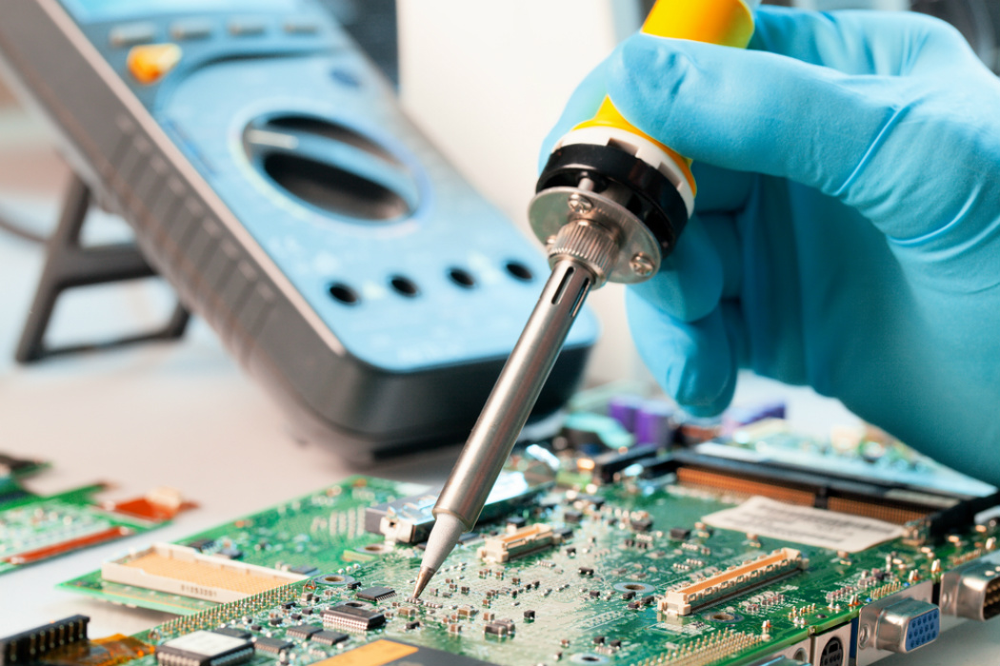

INICIO

Estimados Padres de Familia de Nuevo Ingreso asegúrese que su referencia contenga 15 dígitos, con ello sabremos que es la ficha correcta. sino que regresen al sitio y descargar la nueva.
LOS ALUMNOS QUE DEBEN MATERIALES O RECURSAMIENTOS, INFORMENCE POR CORREO O NUMERO TELEFONICO
SITIO OFICIAL DEL CBTIS 121
.jpg)
LA PAGINA OFICIAL DE EL CBTIS 121
Carreras Profesionales
Técnico en administración de recursos humanos
La carrera de técnico en administración de recursos humanos se desarrolla como vertiente de la carrera de administración y ofrece las competencias profesionales que permiten al estudiante elaborar y gestionar documentación administrativa referente a recursos humanos, integrar al personal a la organización, asisitir en actividades de capacitación, desarrollo y evaluación del personal, así como determinarlas remuneraciones al personal
Técnico en electronica
La carrera de Técnico en electrónica ofrece las competencias profesionales que permiten al estudiante aplicar dispositivos y sistemas electrónicos compactos y eficientes, que están presentes en todos los ámbitos del ser humano, requiere de técnicos en electrónica para operar, poner en marcha y mantener toda la diversidad de sistemas electrónicos existentes de uso doméstico, comercial e industrial.
Técnico en mantenimiento automotriz
La carrera de Técnico en mantenimiento automotriz ofrece las competencias profesionales que permiten al estudiante: prestar servicios en áreas de mantenimiento automotriz, capaces de proporcionar mantenimiento al automóvil moderno, que exige cada vez mayor y mejor preparación tanto en áreas mecánicas como en electrónica y electricidad.
Técnico en mantenimiento industrial
La carrera de Técnico en mantenimiento industrial ofrece sus competencias profesionales que permiten al estudiante realizar actividades dirigidas a realizar mantenimiento a instalaciones eléctricas, fabricar pequeñas estructuras metálicas, realza actividades de ajuste de banco utilizando herramientas básicas, interpretar planos de piezas mecánicas, utilizar máquinas herramientas convencionales y de control numérico para reparación y fabricación de piezas, manejar máquinas de soldar de arco eléctrico y oxicorte, manipular sistemas de control y automatización, sistemas de neumática e hidráulica, mantiene equipos de refrigeración y aire acondicionado e implementara los programas de administración del mantenimiento en los sistemas.
Técnico en mecatronica
La carrera de Técnico en mecatrónica ofrece las competencias profesionales que permiten al estudiante: Realizar tareas de diagnóstico, instalación, reconversión y mantenimiento, a sistemas mecatrónicas, detectar anomalías en procesos de producción automatizados y realizar mantenimientos correctivos y preventivos en procesos integrales, verificando el funcionamiento de sensores, actuadores, roecanismos y programas de cómputo, que gobiernan la producción
Técnico en programación

La carrera de Técnico en programación ofrece las competencias profesionales que permiten al estudiante realizar actividades dirigidas a analizar, diseñar, desarrollar instalar y mantener software de aplicación tomando como base los requerimientos del usuario.
Ventajas de Estudiar en el CBTIS 121

Carreras demandadas

Preparatoria de 3 años